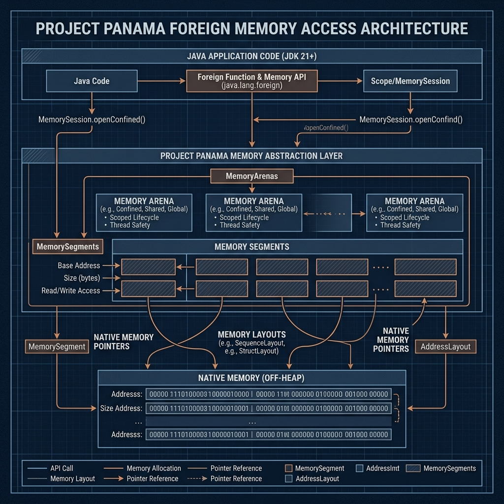

Série: Blindagem de Sistemas — Módulo 04
A Ilusão da Sandbox: JVM Off-Heap e Pontes de Risco

Nota do Desenvolvedor: O caso a seguir representa uma simulação prática de engenharia com base em ameaças e ocorrências reais do ecossistema corporativo.
1. O Incidente: O Cluster de Mensageria Silenciosamente Asfixiado
Em um ambiente corporativo de larga escala, o cluster do Apache Kafka responsável pelo direcionamento de eventos de transações de crédito começou a sofrer com reinicializações forçadas em produção devido a estouro absoluto de recursos do servidor (Out Of Memory do sistema operacional). A equipe de monitoramento inicialmente aumentou o Heap alocado da JVM, mas o problema persistiu.
O diagnóstico aprofundado revelou um vazamento de memória silencioso ocorrendo na área Off-Heap. O sistema de criptografia legado da empresa conectava-se a uma biblioteca externa compilada em C++ usando pontes JNI (Java Native Interface) convencionais. A cada chamada de descriptografia, os buffers de rede eram alocados na memória nativa fora da gerência do Garbage Collector e, por uma falha de encerramento do recurso na ponte, nunca eram desalocados.
"O Garbage Collector do Java é como aquela equipe de limpeza que passa todas as noites nos escritórios recolhendo o lixo que você jogou no cesto (On-Heap). O problema é a memória Off-Heap: é o lixo industrial que você resolveu empilhar no quintal dos fundos. Se você não contratar uma caçamba dedicada para remover esse entulho (como o Project Panama), a prefeitura (o Sistema Operacional) vai interditar o prédio inteiro (matando o processo com o OOM Killer)."
2. O Diagnóstico: Por que o Java comum não blinda tudo

Linguagens gerenciadas como o Java criam a ilusão de imunidade a problemas de memória porque o desenvolvedor comum não interage com endereços físicos. No entanto, o ecossistema corporativo real expõe a JVM a sérios riscos de segurança nas seguintes brechas:
- A JVM é escrita em C++: Qualquer falha de segurança ou estouro de buffer localizada no motor interno da HotSpot derruba ou expõe a execução do aplicativo Java de maneira integral.
- Memória Off-Heap e `sun.misc.Unsafe`: Frameworks de alta velocidade (como Netty ou Cassandra) evitam o Garbage Collector para escapar de picos de latência. Eles manipulam alocações nativas diretamente no sistema operacional. Erros aqui possuem a mesma gravidade e comportamento que falhas de vazamento em C++.
- Desserialização Insegura: Falhas lógicas de injeção dinâmica em bibliotecas antigas (como a catastrófica vulnerabilidade Log4j) contornam a integridade da Sandbox do Java executando comandos maliciosos nativamente.
3. Mitigação: Engenheirando as pontes com o Project Panama
Para desativar a insegurança de conexões nativas legadas, o Java introduziu no JDK moderno a API de Memória Estrangeira (Foreign Function & Memory API), parte do **Project Panama**:
- Substituição do JNI: O Project Panama remove a necessidade de escrever código intermediário em C/C++ para integrar bibliotecas externas, permitindo mapear layouts de memória de hardware de forma tipada e segura direto no código Java.
- Arenas de Alocação Segura: Gerenciar a memória Off-Heap utilizando objetos de controle de escopo chamados Arenas. Ao encerrar o escopo da Arena (usando estruturas do tipo
try-with-resources), toda a memória nativa alocada no sistema operacional é liberada de forma 100% garantida, sem dependência do Garbage Collector.
Revisão de Linha de Frente (Resumo do Aprendizado)
- JVM sob Risco Nativo: O Garbage Collector só gerencia o lixo localizado dentro do cercado controlado do Heap de aplicação. A memória externa permanece sujeita a falhas graves se não for governada.
- Fim do JNI Convencional: Pontes nativas antigas escritas à mão são fontes constantes de vulnerabilidade e vazamento oculto de RAM.
- Project Panama e Arenas: O recurso do Java moderno para alocar e gerenciar memória externa com limites temporais e escopo determinístico.
Dicionário de Trincheira (Para Leigos e Executivos)
- Memória Interna Gerenciada (On-Heap): A área de dados físicos monitorada e gerenciada de forma autônoma pela máquina virtual Java (JVM), onde a alocação e a limpeza de resíduos são processadas automaticamente.
- Memória Nativa Direta (Off-Heap): O espaço de armazenamento alocado diretamente no sistema operacional, fora dos limites da JVM. Oferece alta performance de rede, mas exige controle manual de desalocação por parte do programador para evitar esgotamento de memória no servidor.
- Interface Nativa Legada (JNI): A antiga ponte de programação que possibilita ao Java se comunicar e rodar código em linguagens nativas compiladas (como C ou C++), suscetível a falhas se as conexões de baixo nível não forem blindadas.
- Canal de Integração Estruturado (Project Panama): A nova e moderna infraestrutura da linguagem para conectar de forma robusta e otimizada o ecossistema gerenciado à memória física do servidor.
- Coletor de Resíduos (Garbage Collector): O subsistema automático da linguagem executado em segundo plano para monitorar, varrer e liberar recursos de memória que não estão mais sendo referenciados pelo aplicativo.
— Fim do Módulo 04. Continua no Módulo 05: A Rampa de Alto Nível. Índice da série em: Chamada e Índice.